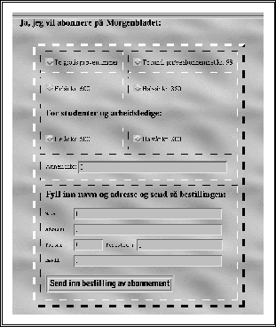
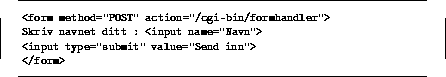

Eksempel på et minimalt form


Neste: 5.5 Ekstern informasjon om-
Opp: 5 HTML Forms
Forrige: Håndtering av data

Figur: Eksempel på bruk av ``Radio buttons'' og vanlige felter i et form
Figur 11 viser et bilde av en HTML side der såkalte ``Radio buttons'' brukes sammen
med vanlige tekstfelter inne i en tabell (hører til HTML 3.0). Det er også mulig å
se på dette eksemplet online.

Figur: Eksempel på et minimums FORM
© Oslonett AS og Intervett AS, 03/05-95, 23:04:38